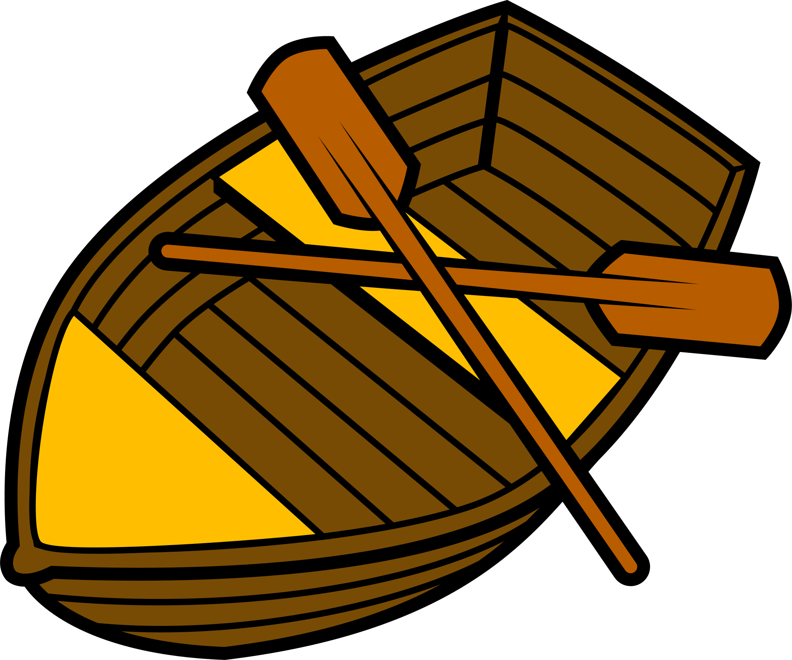
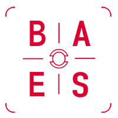

Encabezados HTML.
Hay 6 tipos de encabezados de HTML, de H1 a H6, y sólo puede haber un H1 por documento HTML
Encabezado de H1
Encabezado de H2
Encabezado de H3
Encabezado de H4
Encabezado de H5
Encabezado de H6
☝️
Etiquetas de Texto
- <p>
- Este es un párrafo de HTML y es un elemento de tipo bloque. Se recomienda dar una separación entre párrafos.
- <b>
- Se utiliza para llamar la atención del lector al contenido deseado. Se presenta en negrita
- <strong>
- Indica que el contenido seleccionado es importante y tiene cierta relevancia. Se presenta en negrita
- <em>:
- Indica que el contenido seleccionado tiene énfasis. Ej: Hay que ir al médico ya!
- <i>
- Se utiliza para diferenciar un texto, por ejemplo, en el idioma, if this text is in english o términos técnicos cómo "Homo sapiens". Se presenta en cursiva
- <u>:
- Indica que un elemento se representa con una anotación no textual, por ejemplo: esta palabrá está mal escrtia. Se presenta en subrayado
- <abbr>
- Indica que el elemento es una abreviatura o un acrónimo, por ejemplo HTML. Se recomienda añadir el atributo "title".
- <cite>
- Se utiliza para marcar el título de un trabajo creativo citado. Por ejemplo: Puede encontrar más información en [ISO-0000] o, escrito por George Orwell. Se presenta en cursiva
- <blockquote>
- Indica una cita extendida, por ejemplo:
La tierra es un punto pálido azul en la inmensidad del universo.
Se puede añadir el atributo 'cite' para indicar la url del documento de origen, dónde se explica el contexto o referencia de la cita. También suele acompañarse de la etiqueta 'figcaption' i 'cite'. Se presenta con una sangría de texto.-Juan Perez, El gran libro - <q>
- indica que el texto envuleto es una cita breve en línea, también acepta el parámetro 'cite'. Ejemplo: Según Mozilla,
Firefox 1.0 se estrenó en 2004
. Se presenta con comillas. <code>- Muestra el contenido con un estilo para indicar que el texto es un fragmento corto de código, por ejemplo: La función
selectAll()sirve para... Se presenta con una fuente de tipo 'monoespace'. - <data>
- Vincula el elemento seleccionado con una traducción legible para la máquina. Por ejemplo: Mini Ketchup. Se acompaña del atributo 'value' y si el contenido esta relacionado con el tiempo se utiliza la etiqueta 'time'.
<s>- Muestra el texto tachado cuando se quiere representar cosas que ya no son relevantes o precisas. No es adecuado para ediciones. Ejemplo:
Tickets de venda aquí. Todo vendido!! Se presenta tachando el texto. - <del>
- Indica que el texto seleccionado ha sido eliminado o se ha modificado. Por ejemplo: El lanzamiento para el
martesmiércoles estaba preparado. Se presenta tachando el texto. - <ins>
- Indica que el texto seleccionado ha sido añadido o se ha modificado. Por ejemplo: El lanzamiento para el martes miércoles estaba preparado. Se presenta subrayando el texto.
- <dfn>
- Se utiliza para indicar el término que se define del contexto de una frase. Por ejemplo, el elemnto 'dfn' se utiliza para... Puede tener el atributo 'title' y el 'id' para navegar a la definición. Se presenta en cursiva.
- <kbd>
- El elemento seleccionado se indica como entrada textual del usuario desde un teclado, o entrada de voz. Un ejemplo es: Clica Ctrl + Shift para navegar. Se presenta con fuente monoespaciada
- <samp>
- Se utiliza para mosrar un texto en línea que representa la salida de muestra de un programa de ordenador. Ejemplo: Presiona F1 para continuar. Se presenta en fuente monoespaciada.
- <mark>
- Esta etiqueta remarca o resalta el texto para fines de referencia o notación debido a su relevancia. Por ejemplo, muchas especias de salamandras habitan en ...
- <pre>
- El texto dentro de esta etiqueta se representa tal cómo está escrito en HTML, ejemplo:
Este texto se representa de estab manera - <mark>
- Se utiliza para representar pequeñas anotaciones encima, debajo o al lado del texto base a la hora de mostrar la pronuncación de los carácteres (asiáticos normalmente). Ejemplo: 明日
- <rp>
- Proporciona paréntesis alternativos para los navegadores que no admiten la visualización de anotaciones Ruby mediante el elemento 'ruby'. Encierra cada uno de los paréntesis de apertura y cierre que envuelven el elemento 'rt'
- <rt>
- Especifica el texto Ruby de la anotación, utilizado para proporcionar informaicón de pronuncación, o traducción de la tipografía de Asia oriental. Ver ejemplo anterior.
- <small>
- Se utiliza para representar cometnarios secundarios y letra pequeña, por ejemplo, Sitio creado por Alex Barbera © Derecho de copyright
- <sub>
- Especifica que el texto envuleto debe mostrarse cómo subíndice por motivos tipográficos. Ejempolo: La fórmula del agua es H2O.
- <sup>
- Especifica que el texto envuleto debe mostrarse cómo superíndice por motivos tipográficos. Ejempolo: La casa tiene 23m2.
- <time>
- Indica un periodo específico de tiempo. Puede incluir el atributo 'datetime'. Ejemplo: El concierto empieza a las
- <var>
- Indica el nombre de una variable en una expresión matemática. Ejemplo: El volumen de una caja es l por w por h. Se presenta en cursiva
- <wbr>
- Permite crear un salto de palabra, es decir, puedes indicar por dónde quieres cortar las palabras si es necesario. Ejemplo:
Fernstraßen
bau privat finanzierungs gesetz - <bdi>
- Indica al algoritmo bidireccional del navegador que trae el texto que contiene de forma aislada del texto que lo rodea. Útil cuando no se sabe la direccionalidad del texto insertado. Ejemplo: El señor الرجل القوي إيان ha quedado 3º.
- <bdo>
- Anula la direccionalidad actual del texto, por tanto. Ejemplo: אה, אני אוהב להיות ליד חוף הים o אה, אני אוהב להיות ליד חוף הים
☝️
Etiquetas de saltos
La etiqueta <br> permite realizar un saltode línea cuando se necesario. Puedes añadir las etqieutas que necesites para dejar
más espacio si es requerido.
Por otro lado está la etiqueta <hr> que permite crear una línea separadora de contenido dentro de una sección. Cómo la que está aquí arriba.
☝️
Etiquetas Semánticas Estructurales
- <html>
- Representa la raíz del document HTML, todos los elementos descienden a partir de esta etiqueta. Se recomienda añadirle el atributo 'lang' para indicar el idioma.
- <head>
- Esta etiqueta contiene la información legible para la máquina (metadatos) sobre el documento, cómo título, scripts i hojas de estilos. Una etiqueta por documento.
- <body>
- Representa el contenido del documento HTML, sólo puede haber una etiqueta 'body'. Se le pueden agregar varios atributos. Solo puede haber una etiqueta por documento.
- <header>
- Representa la sección inicial del documento, el contenido suele ser de navegación, un logotipo, formulario de búsqueda, idiomas, u otros elementos.
- <footer>
- Representa la sección final del documento, el contenido suele ser el autor, copyright, o links del sitio web o externos. Solo puede haber una etiqueta por documento.
- <main>
- Contiene el contenido principal del 'body' de un documento. Sólo puede existir una etiqueta por documento.
- <aside>
- Representa una parte del documento cuyo contenido está indirectamente relacionado con el contenido principal. Suele ubicarse en las barras laterales.
- <section>
- Esta etiqueta sirve para representar una sección independiente genérica del documento, son etiquetas semánticas y casi siempre deben tener un encabezado.
- <article>
- Constituye apartados independientes de un documento, normalmente pensados para reutilizarse o repetirse, cómo un artículo de periódico, entrada de blog, tarjeta de producto, etc
- <nav>
- Su principal propósito es proporcionar enlaces de navegación, cómo los menús, las tablas de contenido y los índices, utilizando enlaces, tanto externos cómo internos.
- <menu>
- Es una alternativa semántica a 'ul', aunque los navegadores lo tratan igual, ya que representa una lista de elementos desordenados.
- <div>
- Es el contenedor genérico de bloque para el contenido. No tiene afecto al diseño ni es semántico
- <span>
- Es un contenedor genérico en línea, suele utilizarse para agrupar elementos y darles estilo, usando atributos class o id.
- <address>
- Sirve para proporcionar información de cotacto para una persona u organización. Suele incluir una dirección, URL, email, teléfono, redes sociales...
☝️
Etiquetas de Bloque VS Etiquetas de Línea
☝️
Estilos CSS en HTML
Hay tres maneras principalmente de añdir estilos al código HTML. Una es añadir los estilos en línea, en el propio código HTML
La primera es añadirlo directamente, por ejemplo: este texto es de color rojo
La segunda opción es añadir la etiqueta <style> dentro de la etiqueta <head> del documento e indicar allí los estilos. Por ejemplo, este texto es verde
La tercera opción (y recomendada) es añadir un link dentro de la etiqueta <head> a una hoja de estilos externa, cómo en este mismo documento está hecho.
☝️
Scripts en HTML
La etiqueta <script> se utiliza para incrustar código o datos ejecutbles, normalmente código JavaScript. Se puede añadir directamente en la zona del documento HTML que lo necesitemos, o añadirlo dentro de la etiqueta <style> e importar las hojas de código que necesitemos. Se le pueden añadir varios atributos (para mejorar la optimización) siendo el más utilizado 'src' para hacer referencia al código que queremos importar.
☝️
Imágenes
Imagen en formato .png
Imagen en formato .jpg
Imagen en formato .gif
Imagen en formato .svg
☝️
SVG
Este es un icono creado con código SVG
☝️
Figuras y pictures
La etiqueta <figure> representa contenido autónomo, normalmente con la etiquta <figcaption> para indicarle un título
También se puede utilizar para envolver code snippets con <pre> y citas con <blockquote>
Por otro lado esta la etiqueta <picture> la cual contiene 0 o más elementos <source> y un elemento <img>
Así ofrece versiones alternativas de una imagen para diferentes escenarios de visualización o dispositivos.
El navegador repasa las diferentes etiquetas <source> y elige la que mejor se adapta. Si no se adaptan o no acepta la etiqueta <picture> utiliza la url de <img>
Se pueden utilizar diversos atributos, cómo 'srcet' o 'media' para ajustar las imágenes
En este ejemplo, cuando el tamaño del dispositivo es menor de 600 píxeles se muestra una imagen, y si se aumenta el tamaño se muestra otra
☝️
Listas Ordenadas
Lista ordenada
Con los atributos puedes modificar la lista ordenada, utilizando, 'start', 'reversed' y 'type'
- Primavera
- Verano
- Otoño
- Invierno
Empieza a partir del 3 con 'start=3'
- Primavera
- Verano
- Otoño
- Invierno
Orden inverso con 'reversed'
- Primavera
- Verano
- Otoño
- Invierno
Modifica los números con 'type'. 'a','A','i','I','1'
- Primavera
- Verano
- Otoño
- Invierno
Lista desordenada
Para eliminar o cambiar los estilos de la puntuación se debe hacer con CSS
- Terminar de escribir los ejercicios
- Comprobar que esté todo correcto
- Entregarlos al profesor
Lista descriptivas
Se utilizan para ordenar una serie de elmentos con un título (etiqueta <dt>) y una descripción (etiqueta <dd>)
- HTML
- Es un lenguaje de marcado que define el contenido de la web
- CSS
- ES un lenguaje de definición que da estilos al código HTML
- JavaScript
- Es el lenguaje de la web
☝️
Tablas
Las tablas están formadas por varias etiquetas, y pueden contener una cabecera (<thead>), un cuerpo (<tbody>) y un pie (<tfoot>)
También puede tener un título con la etiqueta <caption> y con <colgroup> se agrupan las columnas de una tabla
| Countries | Capitals | Population | Language |
|---|---|---|---|
| USA | Washington, D.C. | 309 million | English |
| Sweden | Stockholm | 9 million | Swedish |
☝️
Enlaces
Enlace interno hacia otra página de esta aplicación o web: Hacia la página interna Hola
Enlace a un sitio externo: Visita el navegador de Google
Enlace con una imagen: 
Enlace a correo electrónico: Enlace al correo alex@baesaudiovisual.com
Enlace a teléfono: +34 666 666 666
Enlace a WhatsApp: Hablemos por WhatsApp!
☝️
Elementos Interactivos
- <button>
- Elemento interactivo activado por el usuario con el mouse, teclado, dedo o comando de voz, y una vez activado realiza una acción. Puede tener varios atributos.
- <details> y <summary>
- Elemento interactivo en el cual la información es visible cuando cambia de estado a "abierto". Se debe utilizar la etiqueta <summary> para desplegar la información.
Información del sistema
Se requiere un ordenador operativo con 32 GB de RAM
- <dialog>
- Elemento interactivo que representa un cuadro de diálogo u otro componente interactivo cómo una alerta o subventana. Se suele añadir un formulario en su interior y trabajar con JavaScript
- <progress>
- Elemento interactivo que muestra el proceso de finalización de una tarea, normalmente se muestra cómo una barra de progreso. Utiliza los atributos 'max' y 'value' para indicar el progreso.
- <meter>
- Elemento interactivo que representa un valor escalar dentro de un rango o valor fraccionario. Utiliza atributos cómo 'min', 'max', 'low', 'high', 'optimum', 'value'.
Calienta el horno a350 degrees . - <datalist>
- Elemento interactivo que contiene un conjunto de elementos <datalist> que representan las opciones permitidas o disponsibles para elegir.
☝️
Multimedia
- <audio>
- Se utiliza para incrustar contenido de sonidos en el documento, utilizando el atributo 'src' o la etiqueta <source> se pueden añadir varias fuentes de audio. Hay varios atributos para controlar el audio.
Con la etiqueta <audio> se puede utilizar <track> para añadir subtítulos, descripciones de audio o textos relacionados con el contenido.
- <video>
- Se utiliza para incorporar un reproductor multimedia que admite la reproducción de vídeo en el documento. También cuenta con atributos, y las etiquetas <source> y <track>
- <embed>
- Se utiliza para incrustar contenido interno o externo en el punto especificado del documento, cuenta con varios atributos cómo 'src', 'type', 'title', 'height', 'width'.
- <iframe>
- Se utiliza para incrustar una parte de otra página HTML en la actual. Hay que vigilar el uso de esta etiqueta para no perder rendimiento de la página.
- <object>
- Se utiliza para incrustar varios tipos de contenido en el documento, cómo vídeos, imágenes, documentos, etc. Se debe especificar el tipo con el atributo 'type'.
☝️
Formularios
Tipos de campos de formulario
- Text
- Checkbox
- Radio
- Fecha
- Colores
- Botón
- Subir archivo/s
- Escondido
- Número
- Teléfono
- Contraseña
- Buscador
- Textarea
- Selector
- Selector múltiple
- Sólo lectura
Ejemplo de Formularios
Formulario de Login
Selects, Radios y Checkbox
Formulario de Contacto
☝️
Elementos avanzados
- <map> y <area>
- Elemento interactivo que se utiliza con <area> para definir un mapa de imagen, es decir, una area de enlace que se puede hacer clic. <area> define un mapa dentro de una imagen con distintas zonas para clicar.

- <canvas>
- Se utiliza junto la API de canva o la de WebGL para dibujar gráficos y animaciones. Necesita utilizarse JavaScript para dibujar.
- <template>
- Se utiliza para definir fragmentos de código HTML que se pueden clonar y utilizar varias veces con JavaScript. Requiere el uso de JavaScript.
- <slot>
- Se utiliza para crear puntos de inserción en un componente web en el que se puede colocar contenido dinámico.
Título por defecto Descripción por defecto Mi artículo
Este es el contenido de mi artículo.
- <output>
- Crea un contenedor en el que un sitio web puede inyectar los resultados de un cálculo o de una acción del usuario..
Calculadora para sumar
- <noscript>
- Define una sección de HTML que se insertará si un 'script' no es compatible o si está desactivado la opción de 'permitir scripts'.
Funciona!
Atributos
Atributos Globales
Los atributos globales son atributos comunes a todos los elementos HTML; se pueden usar en todos los elementos, aunque es posible que no tengan ningún efecto en algunos.
- accesskey: Define una tecla de acceso rápido para el elemento
- autocapitalize: Controla la capitalización automática del teclado en dispositivos móviles
- autofocus: Hace que el elemento tenga el enfoque automático cuando se carga la página
- class: Define una o más clases CSS para el elemento
- contenteditable: Indica si el contenido es editable o no
- data-*: Atributo personalizado que permite la inclusión de datos adicionales en un elemento HTML
- dir: Indica la dirección de ltexto para el elemento
- draggable: Indica si el elemento se puede arrastrar o no
- enterkeyhint: Controla la presentación de la tecla Enter en el teclado virtual en dispositivos móviles
- exportparts: Define los nombres de los fragmentos de esetilo CSS que se pueden exportar desde el elemento
- hidden: Indica si el elemento debe ocultarse o no
- id: Define un identificador único para el elemento
- inert: Indica que el elemento no puede recibir eventos y no debe ser enfocado
- inputmode: Indica el modo de entrada para el elemento, cómo "texto", "número" o "teléfono"
- is: Especifica el tipo de elemento personalizado que se está utilizando
- itemid: identifica un elemento HTML como una entidad única y proporciona un URI permanente
- itemprop: Define una propiedad específica de un elemento HTML para su uso con microdatos
- itemref: Especifica los identificadores de otros elementos que describen el elemento actual con microdatos
- itemscope: Indica que un elemento HTML representa un objeto independiente y distinto con microdatos
- itemtype: Indentifica el tipo de elemento HTML para su uso con microdatos
- lang: Indica el idioma principal utilizado en el contenido y los atributos del elemento
- nonce: Permite especificar un valor de número utilizado por los mecanismos de seguirdad de contenido
- part: Define los fragmentos de estilo de CSS que se pueden aplicar a un elemento
- slot: Define el nombre de un slot de contenido donde se puede insertar elementos hijos
- spellcheck: Indica si el elemento debe ser verificado ortográficamente o no
- style: Define estilos CSS en línea para el elemento
- tabindex: Indica el orden de tabulación del elemento
- title: Define información adicional sobre el elemento
- translate: Indica si el elemento y su contenido deben ser traducidos o no
Atributos de información
Los atributos de información (data attributes) son atributos personalizados que se pueden agregar a los elementos HTML para almacenar información adicional que no tiene un propósito semántico específico.
Son útiles para almacenar información específica de la aplicación, como configuraciones, identificadores de objetos o información que se necesita para operaciones de JavaScript.
Para acceder a los valores de los atributos de datos, se puede utilizar JavaScript o CSS. En JavaScript, se puede acceder a los atributos de datos utilizando el método "getAttribute('data-nombre-atributo')" y para establecer su valor, se utiliza el método "setAttribute('data-nombre-atributo', 'valor')" en el objeto del elemento HTML correspondiente.
- Primavera
- Verano
- Otoño
- Invierno
Atributos
Estos atributos sólo se aplican a ciertos elementos
- accept: Especifica los tipos de archivos que se pueden seleccionar en un cuadro de diálogo de archivo
- alt: Especifica un texto alternativo para la imagen en caso de que no se pueda mostrar
- async: Indica que el script se descargará de forma asíncrona mientras se analiza el resto del contenido del documento
- autocomplete: Indica si el elemento debe tener una función de autocompletado habilitada o no
- capture: Especifica si se debe capturar la entrada del usuario utilizando la cámara o el micrófono del dispositivo
- checked: Indica que el elemento está seleccionado por defecto, como en el caso de un botón de radio o una casilla de verificación
- cols: Especifica el número visible de columnas de texto para el elemento 'textarea'
- crossorigin: Especifica si se permite la carga de recursos a través de una política de intercambio de recursos de origen cruzado (CORS)
- disabled: Indica que el elemento está desactivado y no se puede interactuar
- elementtiming: Especifica el tiempo de carga del elemento
- for: Se utiliza en una etiqueta 'label' para especificar el control al que se hace referencia
- href: Especifica la URL de destino del enlace para el elemento 'a'
- max: Especifica el valor máximo permitido para el elemento
- maxlength: Especifica el número máximo de caracteres permitidos para el campo de entrada de texto
- method: Especifica el método HTTP utilizado para enviar el formulario
- min: Especifica el valor mínimo permitido para el elemento
- minlength: Especifica el número mínimo de caracteres permitidos para el campo de entrada de texto
- multiple: Permite seleccionar varios archivos a la vez en el elemento 'input' de tipo "archivo"
- pattern: Especifica un patrón que debe seguir el valor del elemento
- readonly: Indica que el campo de entrada de texto es solo de lectura y no se puede modificar
- rel: Especifica la relación entre la página actual y el destino en el elemento 'a'
- rows: Especifica el número visible de filas de texto para el elemento 'textarea'
- required: Indica que el campo de texto de entrada es obligatorio y debe ser completado antes de enviar el formulario
- selected: Indica que la opción del elemento 'select' está seleccionada por defecto
- size: Especifica el ancho visible del campo de entrada de texto
- step: Especifica el incremento entre los valores permitidos para el elemento
- type: Especifica el tipo de elemento, por ejempolo, "texto", "botón", "submit", "checkbox", etc
- value: Especifica el valor del elemento
Accesibilidad Web
Atributos para mejorar la accesibilidad
- role: Son utilizados para definir el papel semántico que desempeña el elemento en la página web. Son parte de la especificación WAI-ARIA y se utilizan para mejorar la accesibilidad de la página.
- aria-*: Proporciona información adicional a los lectores de pantalla y otros dispositivos de asistencia sobre la función y el estado de un elemento HTML
- tabindex: Se utiliza para establecer el orden de tabulación de los elementos de una página web. Esto es útil para los usuarios que navegan por el sitio web con el teclado.
- alt: Se utiliza para proporcionar una descripción alternativa de una imagen o un elemento multimedia. Los lectores de pantalla pueden leer el texto alternativo en lugar de la imagen para usuarios con discapacidad visual.
- title: Se utiliza para proporcionar información adicional sobre un elemento
- lang: Se utiliza para especificar el idioma de un elemento en una página web. Esto es útil para los usuarios que utilizan lectores de pantalla en otros idiomas.
Ejemplos
Las estaciones del año
- Primavera
- Verano
- Otoño
- Invierno
☝️